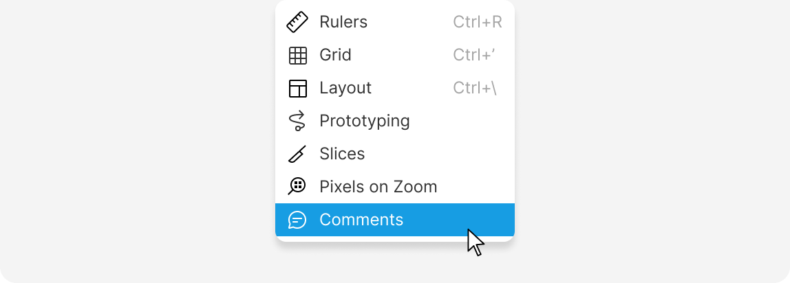

Make notes, provide feedback, and share ideas with your teammates
Use comments in your documents to leave notes and to-do lists for yourself or share and receive feedback.
In Lunacy, there are three type of comments:
All shown in the demo below.
To add a comment to a document:
C or select the Comment tool.Enter.To comment with a voice recording:
 to stop recording. Use the
to stop recording. Use the Enter.Unlike text and voice comments, which are visible/playable only once you click on the comment markers to open them, sticker comments show up right on the canvas.
To comment with a sticker:
By default, comments are always visible on the canvas.
To hide them, disable the the Comments option in the Additional options menu on the top bar:

You can view and manage comments in a document by selecting the Comment
tool on the toolbar or pressing C to enable comment mode. All the comments
on the current page will be visible on the canvas.
Open and read/listen to comments by clicking the comment markers on the canvas.
Clicking the